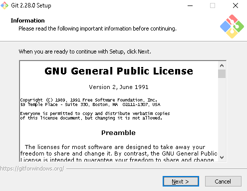
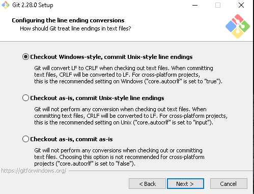
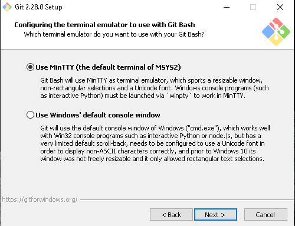
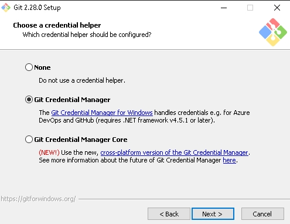
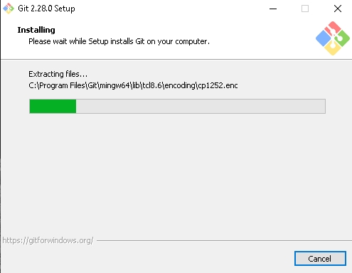
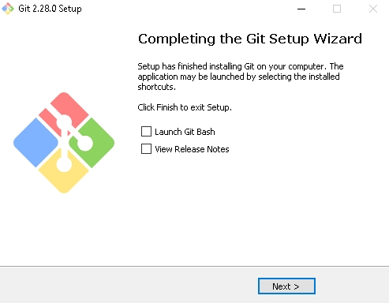

Existen diferentes métodos para instalar Git en Windows. Lo mas sensato es recurrir al sitio oficial, en particular a la página de descarga de git para windows Enlace de descarga, donde directamente al entrar en ella desde Windows comenzará la instalación, pues detecta la versión que tienes instalada.
También se puede instalar otra opción de Git para Windows, en la que se tienen todas las herramientas necesarias, tanto para usuarios mas experimentados como para usuarios principiantes. Esta opción te ofrece tanto un emulador BASH que pareciera estar trabajando en LINUX, asi como una interfaz gráfica, que tiene la versión gráfica de cada uno de las funciones de la versión de la línea de comandos.
Acontinuación se muestra los pasos de su instalación:
1. En primer lugar nos dirigimos a la página oficial de GIT descargamos el instalador, luego de la descarga buscamos el instalador en la carpeta de descargas de nuestro equipo y damos doble click para iniciar su instalación.
2. Despues de aceptar los cambios a realizar en el equipo nos mostrará el siguiente cuadro y en el damos click en siguiente lo cual significa que aceptamos la licencia GPL.

3. Si deseamos cambiar la carpeta donde se instalará el programa no hay problema, sino se puede dejar la que viene por defecto.
4. En esta parte seleccionamos los componentes de instalación por defecto o solo los que deseemos instalar.
5. Si queremos podemos especificar una carpeta en el menú de inicio, pero por defecto es "Git".
6. Acontinuación seleccionamos el editor de texto por defecto para Git y luego por defecto dejamos la opción marcada "use OpenSSH"


7. Dejamos la opción marcada por defecto la cual es OpenSSL como capa de transporte, salvo que se se trate de una red corporativa con dominio y certificados propios.

8. En el siguiente paso se debe configurar el modo de checkout/commit. Por defecto se hace el checkout estilo Windows (se convierte LF a CRLF cuando se hace checkout de archivos de texto y viseversa al momento de commit) Git implementa esta conversión para poder visualizar correctamente los saltos de línea en Windows. Se puede optar por otra convención según se requiera.

9. Seleccionamos Mintty el cual nos permitirávpoder utilizar Git Bash.

10. Luego seleccionamos la "GIT credential manager" que es la que nos aparece por defecto.

11. Acontinuación vienen unas opciones adicionales experimentales que si deseamos podemos habilitar, sino damos click en siguiente.


12. Esperamos a que finalice la instalación y despues seleccionamos siguiente lo cual significa que hemos finalizado la instalación.

